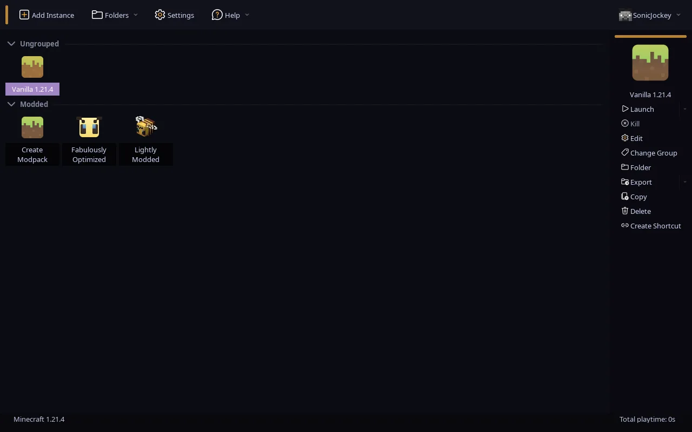

Bee Launcher
A FreesmLauncher fork that removes offline account restrictions, adds custom auth server support, and provides more customization.
Latest release: releases page

Features
Everything from Prism Launcher, plus more.
Offline mode without a Microsoft account
Play without signing in. No Microsoft account required to launch the game.
Ely.by accounts
Use Ely.by as an account option with seamless Minecraft integration. Your skin shows up everywhere, no mods or plugins needed.
Custom auth servers
Point the launcher at any compatible authentication server.
Polished themes
Minimalist dark and light themes based on Fluent Dark with honey accent colors and Microsoft Fluent icons.
Screenshot to clipboard
In-game screenshots are copied to your clipboard history automatically, no mods needed.
Quick Play shortcuts
Create desktop or menu shortcuts that launch straight into a world or server from the Worlds and Servers pages.
Crash analysis
When the game crashes the launcher scans logs and crash reports and points out the likely cause, like low memory, missing mod dependencies or driver problems.
Instance repair
Verifies libraries, jars and assets against their checksums and re-downloads only the broken files.
Instance backups
Manual or scheduled snapshots with rotation and one-click restore from the Backups page.
Migration
Detects and imports instances from the vanilla launcher, the MultiMC family, CurseForge, Modrinth App and GDLauncher, including worlds, mods and configs.
Resumable downloads
Automatic retries for Minecraft files, mods, libraries and Java runtimes.
Animated snow
An optional snow effect for those who love snow.
Random names and icons
Random username and instance icon selection powered by a lavarand grade random number generator.
Free and open source
FLOSS, licensed under GPL 3.0 only, with all of the Prism Launcher features included.
Screenshots
The dark honey theme in action.
Compare
How Bee Launcher stacks up against other launchers.
| Feature | Bee Launcher | Freesm Launcher | Shattered Prism | HMCL | Fjord | PollyMC | PineconeMC | UltimMC | Prism-Cracked | Prism Launcher |
|---|---|---|---|---|---|---|---|---|---|---|
| Offline Mode without a Microsoft account | Yes | Yes | Yes | Yes | No | Yes | Yes | Yes | Yes | No |
| FTB packs | Yes | Yes | Yes | No | Yes | Yes | Yes | No | Yes | Yes |
| Ely.by support | Yes | Yes | Partial1 | Partial1 | Partial1 | Partial1 | Yes | Partial1 | No | No |
| Authlib-injector support | Yes | Yes | Yes | Yes | Yes | Yes | Yes | No2 | No2 | No2 |
| Screenshots saving to the buffer history | Yes | Yes | No | No | No | No | No | No | No | No |
| Discord Rich Presence | No | Yes | No | No | No | No | No | No | No | No |
| Built-in news feed | No | Yes | No | No | No | No | No | No | No | No |
| Cat packs and anime content | No | Yes | No | No | No | No | No | No | No | No |
| Quick Play shortcuts (world/server) | Yes | Yes | No | Yes | No | No | No | No | No | Yes |
| Crash analysis | Yes | No | No | Yes | No | No | No | No | No | No |
| Instance repair (checksum verification) | Yes | No | No | No | No | No | No | No | No | No |
| Instance backups with rotation | Yes | No | No | No | No | No | No | No | No | No |
| Migration from other launchers | Yes | No | No | No | No | No | No | No | No | No |
| Fork | FreesmLauncher | PrismLauncher | FjordLauncher | None | PollyMC | PrismLauncher | PrismLauncher | MultiMC | PrismLauncher | PolyMC |
1 Does not use official Ely.by authlib patches.
2 You can still change a javaagent JVM argument to use your authlib-injector jar file as an auth server.
Bee Launcher also disables the built-in updater and the upstream network integrations it had no replacement for, such as news, socials and update checks.
Download
Stable releases for Linux, Windows and macOS.
Windows
x86_64
You can also build from source.